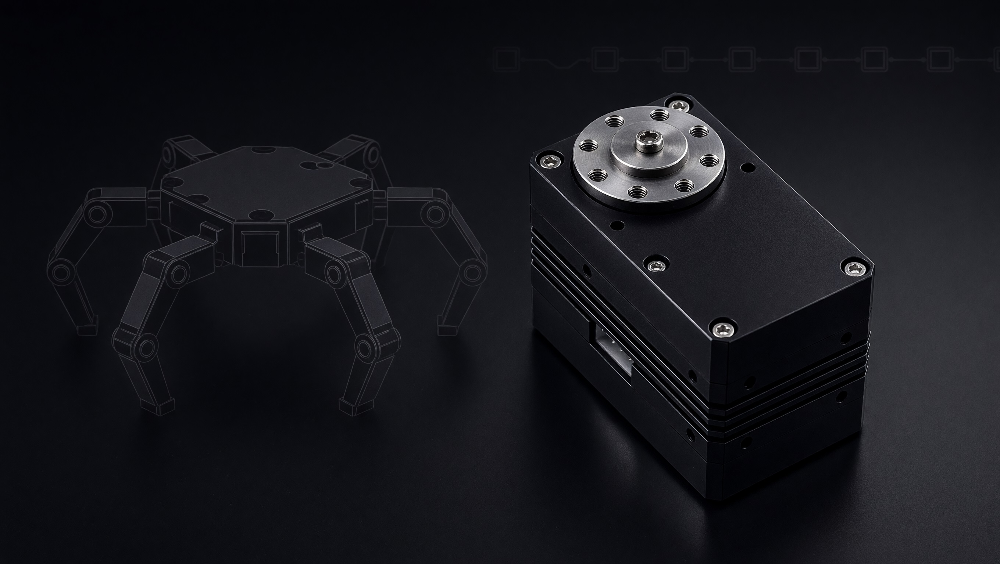

Servos / Actuators
Smart-приводы KVT: момент, энкодер, RS-485/TTL — ядро исполнения в узле
В линейкуСервоприводы, IMU, контроллеры, питание и сенсорика для интеграторов и OEM

Kavatronic задаёт пять функциональных ролей в типовой системе. Не каждый проект требует все модули сразу — состав узла подбирается по нагрузке, интерфейсам и требованиям к контуру управления.
Пять согласованных направлений — от исполнения до восприятия среды. Карточки ведут в product hub линейки.
Smart-приводы KVT: момент, энкодер, RS-485/TTL — ядро исполнения в узле
В линейкуИнерциальные модули для динамики платформы и навигационного контура
В линейкуВычислительный модуль и шлюз данных для синхронизации узла
В линейкуИнтеллектуальное питание, защита и телеметрия мехатронного узла
В линейкуСенсорика восприятия среды для мобильных и промышленных систем
В линейку